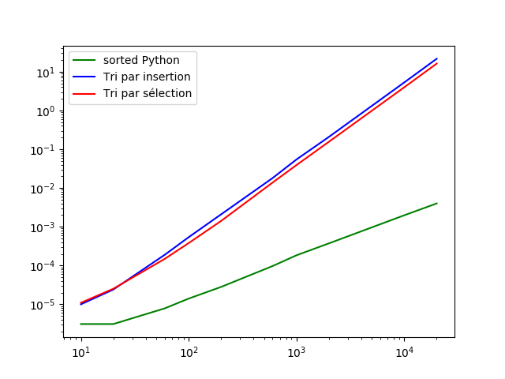

TP1 : Algo de recherche : Nous avons vu 3 algorithmes de recherche : tri par lancer de dés, tri bulle et tri saute-mouton polonais. On va expliquer ici et on va mettre un schéma simplifié de l'algo.
On a trouvé la complexité de ces algorithmes et on a mesuré les temps d'exécution. Cela se résume dans le graphique attaché :

On trouve mon code ci-dessous: Code à compléter